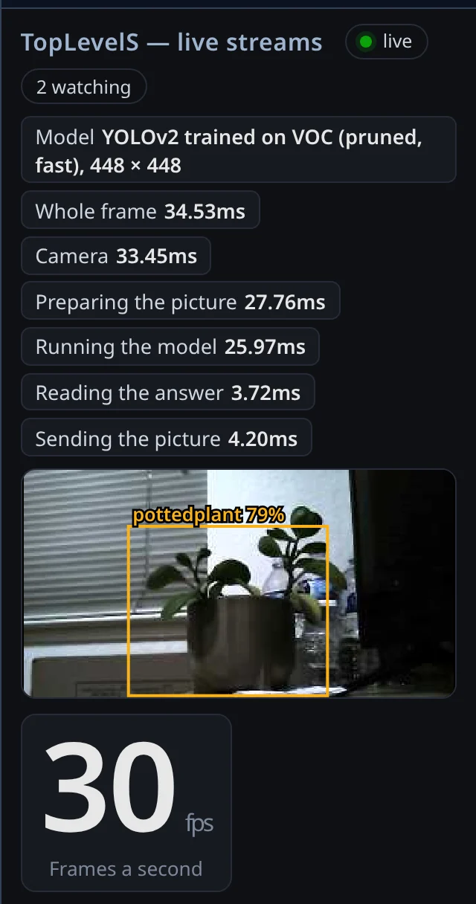

Low latency · detector in the fabric · KV260

Picture: current KV260 live view; fabric-version capture coming
Realtime Object Identification
A detection network hardened into the FPGA fabric itself, no NPU in the path. Camera in, box out in about ten milliseconds, with the chip finishing each frame in under three. The camera, not the chip, sets the frame rate.
- chip time per frame (p50 · p95)
- 2.9 · 3.0 ms
- camera to box (p50)
- 10 ms
- frames dropped
- 23 / 30,366
- human-written application code
- 0 lines
Up to 526 frames/s on the chip · 200 fps camera for 10 min, 0 drops · 7,200/7,200 outputs bit-exact vs simulation · 320×160 single-object, class-agnostic detector at 250 MHz, 36% of the chip · competition weights today, retrained weights next · Nov 2026